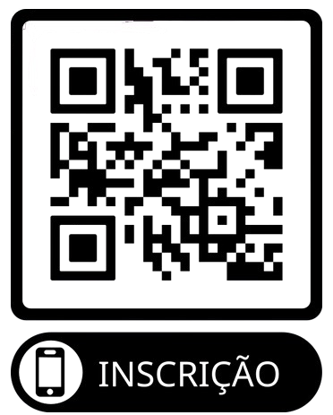

MAPAF
Seminário de
Libertação
"Liberte-se das amarras" (Is. 61:1)
Sábado 25/04 • 14h às 20h
Domingo 26/04 • 17h às 20h
Com Apóstolos Dantas e Elenice
📍 LOCAL: Templo MAPAF
Av. Curaçao, 3, Qd 51 - Nova Cidade, Manaus

INSCRIÇÃO